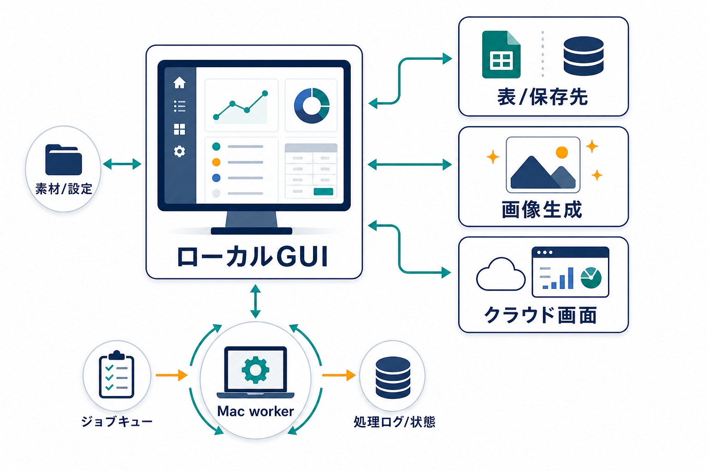
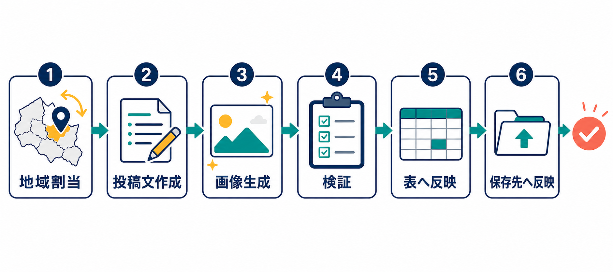
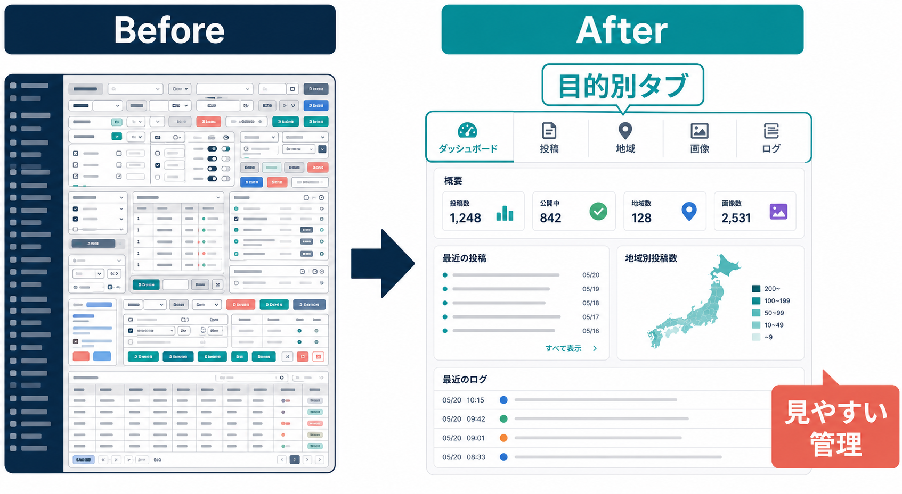

初期GUIから週次運用へ
JMTY向けのローカルGUIを起点に、投稿文、地域割当、画像生成、Sheet/Drive反映を扱う運用基盤へ拡張されました。
JMTY workspace / team mode document
ローカルGUIの立ち上げからUI改善、画像生成、GWS連携、Vercel構想、週次自動化までの指示を、要約・原文・根拠で追えるHTML版です。
Executive Summary
JMTY向けのローカルGUIを起点に、投稿文、地域割当、画像生成、Sheet/Drive反映を扱う運用基盤へ拡張されました。
情報量の多さを解消するため、ダッシュボード、投稿文管理、地域運用、画像生成、ログなどに画面を分ける方針が強化されました。
GPT image 2、PNG、SVG禁止、クリック誘導バナー禁止、見本生成、再生成、取消、検証といった画像運用のルールが整理されました。
Vercel版管理画面、ログイン、操作履歴、ジョブキュー、Mac workerが取りに行く方式が検討されました。
Phases
/jmty と作業導線を整備
UI、画像、認証、素材管理が集中
ログイン、管理者、履歴、workerを検討
Sheet確認、GWS認証、週次一括化
投稿生成ツールと画像検証を更新
整合性検証、テンプレ追加、履歴作成
GPT image 2 diagrams



Detailed Timeline
各カードは「要約」「原文プロンプト」「根拠」を元Markdownから構造化しています。
要約
JMTY workspaceのスキル入口や案内が整備され、後続の /jmty とGUI作業の土台になった。
原文プロンプト
アクセスできたセッション履歴内では、このコミットに直接対応するユーザー原文は未検出。
根拠
498642f JMTY用の案内にそろえたe61202b JMTYスキルの入口をまとめたAGENTS.md の /jmty コマンド定義要約
ローカルGUI本体 scripts/jmty_gui.py、README、GUI用出力フォルダ、週次出力素材、シートキャッシュなどが初回実装・保存された。
原文プロンプト
完全な原文は未検出。Git上の作業ブランチとコミットから、JMTY GUI作成・出力保存作業が行われたことを確認。
根拠
agent/Shoma-DS/20260511-225731-jmty-gui 作成443729a JMTY GUIと出力を保存するscripts/jmty_gui.py, README-jmty-gui.md, outputs/jmty-gui/sheet_cache.json, outputs/jmty-gui/generation_requests/要約
GUIアプリのUI/UX改善のため、UIUXPROMAXスキルを導入してデザイン改善するよう指示。
原文プロンプト
skills.shからUIUXPROMAXというスキルをダウンロードして今回のアプリのUIUXデザインを改善してください。
根拠
019e175f-ae37-7693-8682-9c4870007311, ts 1778508641443729a に .agents/skills/ui-ux-pro-max/ が追加要約
Google Sheets / Drive連携の認証状態表示と、GUIから再認証するボタンを追加するよう指示。
原文プロンプト
gwsの認証が切れているかどうかの表示とgws認証を再認証するためのボタンをつけて欲しい。
根拠
019e1760-b7b9-7f92-80c8-5ef9b4a16262, ts 1778508726README-jmty-gui.md の gws認証 節要約
情報量とボタンが多すぎるため、ダッシュボード、投稿文管理、地域/ローテーション、画像生成、実行ログなど目的別に画面を切り替えるUIへ変更するよう指示。
原文プロンプト
今画面の中に情報が多すぎるから投稿文を作成したり管理したりするための場所地域を割り振ったりローテーションを変えたりとかっていうところを管理するための場所画像生成をするための場所実行ログとかを見るための場所みたいな形で画面の切り替えでその必要な情報だけバッと並ぶような形のものにしたいです今はちょっとボタンが多すぎるし情報が多すぎるからその点で見にくいし分かりづらいので目的ごとに分かれた場所っていうのが欲しいですもちろん今のダッシュボードみたいに全部が表示されている場所も欲しいのでそれをメインにしてそれぞれの画面切り替えボタンみたいなのを用意して欲しいですよろしくお願いします
根拠
019e1760-b7b9-7f92-80c8-5ef9b4a16262, ts 1778510822README-jmty-gui.md の機能一覧要約
画風テンプレートに架空条件の見本画像生成ボタンを追加し、新規登録時に見本画像からプロンプト生成、プロンプトからサムネ生成をできるようにする指示。
原文プロンプト
画風の見本テンプレみたいなのがあると思うんだけどこれを自分たちで設定することができるみたいな感じに今なってると思いますそうじゃなくて見本として架空の地域架空の月収でいいので作ってほしいです見本を生成するみたいなボタンを用意して用意してくれたらそれでポチッと押してしたら画像が生成されてで見本の画像が架空の条件架空の月収架空の形で生成されて今の画像なしっていうところにセットされてサムネとしてセットされるようなものがあると嬉しいです新規で登録するときに画像を入れた場合は画像プロンプトを自動で作ってくれるテンプレのプロンプト画像プロンプトを入れた場合はそのまま生成してサムネイルを生成してくれる機能も同時に欲しいですよろしくお願いします
根拠
019e175f-ae37-7693-8682-9c4870007311, ts 1778511133README-jmty-gui.md の 画風テンプレ操作要約
「反映」ボタンの文言をわかりやすくし、地域とアカウントの紐付けをドラッグ&ドロップの看板的UIで操作できるようにしたいという指示。
原文プロンプト
地域のローテーションに関して反映っていうボタンが分かりづらいですだから地域をローテーションするとか地域ローテーションとかってボタンに変えてくださいさらにアカウントごとのカードと地域ごとのカードをドラッグ&ドラッグで設定するような地域とアカウントごとの紐付けをドラッグ&ドロップで操作するような看板じゃないかもしれないけど看板みたいなGUIになってくれるといいなと思ってますで その看板で動かしたものを反映するときは反映ボタン地域ローテーションで1個ずつずらすっていうのをやりたいときは地域ローテーションっていうボタンでローテーションするみたいな形にしてほしいですよろしくお願いします
根拠
019e1760-b7b9-7f92-80c8-5ef9b4a16262, ts 1778511594README-jmty-gui.md の ランダム割当確認 / ランダム割当をスプレッドシートに反映要約
画像生成・見本生成ボタンを押しても反映されない問題の調査、生成完了後に該当サムネ部分を更新するUIを希望。
原文プロンプト
画像生成のボタンを押したんだけど反映されなかったから調べてほしい。あと、画像生成や見本生成のボタンを押したい。画像生成ができたらしっかり反映されてほしいから、生成された瞬間に読み込み直すような形がいいで。ページ全体を読み込み直すってよりかは、その反映させるサムネの部分とか、そこだけリロードして反映するような形であってほしいですよろしくお願いします。
根拠
019e1760-b7b9-7f92-80c8-5ef9b4a16262, ts 1778512414要約
投稿文詳細モーダルが狭すぎるため、内容に応じて縦長にし、スマホでも表示できるようにする指示。
原文プロンプト
投稿文章の詳細を表示するボタンを押して出てきたモーダルが、めちゃくちゃ縦に狭くて、スクロールをめっちゃしなくちゃいけないからだるすぎる。投稿文章とか内容によって縦長にしたりとか、内容に合わせたサイズ感で表示してほしいです。あと、これスマホでも表示できるようにしてほしいから、レスポンシブ対応もしてほしいです。
根拠
019e179b-20e3-74e1-b673-b959079b7f52, ts 1778512562要約
不要な画風テンプレートを削除するゴミ箱ボタンを追加し、Google Material Design系のアイコンで全体を洗練させる指示。
原文プロンプト
画風テンプレートの見本なんだけど、この画風もいらないなって思ったときに消せるような感じにしてほしい。だから、ゴミ箱ボタンみたいなのを用意してほしいです。
UI/UXの改善として、Googleのマテリアルデザインなどでアイコンを取得してきて、全体的に洗練されたデザインに更新してほしいです。
根拠
019e175f-ae37-7693-8682-9c4870007311, ts 1778512821要約
生成済み画像の再生成、画像登録取消、画像一括生成、生成中プレースホルダーの視覚表現、再生成時は前画像を削除する運用を指示。
原文プロンプト
生成した画像を再生成するボタンや画像取り消しみたいな生成した画像の登録をなかったことにするボタンなどは今実装している？ないなら実装して
画像を一括生成するボタンが欲しいです。画像の一括生成のときは、今生成している画像のプレースホルダーの部分がキラキラ光ったりとか、今まさに生成中です、みたいなのが分かるような形にしてほしいです。順番に、更新されていくような形がいいかなと思います。
基本的に再生成の場合は、前の画像を削除してから生成するという形をとってほしいです。よろしくお願いします。
根拠
019e1760-b7b9-7f92-80c8-5ef9b4a16262, 019e175f-ae37-7693-8682-9c4870007311README-jmty-gui.md の画像生成・OK・画像取込・検証・取消関連説明要約
bananaX / Gafoo系の画風プロンプトを取得・登録し、見本画像をサムネイルとして保存、ないものは生成する指示。
原文プロンプト
https://furoku.github.io/bananaX/projects/infographic-evaluation/このURLから、めぼしいGafooのプロンプトのテンプレをいくつか選んで、Gafooプロンプトとして登録してほしいです。よろしくお願いいたします。
https://furoku.github.io/bananaX/projects/infographic-evaluation/ ここで撮ってきたプロンプトの見本画像とかがあるならそれダウンロードしてきてサムネとして出して。見本画像がないなら全部生成してサムネ作って
現状、サムネが用意されていないGafooテンプレのサムネは、全部生成してほしいです。
根拠
019e175f-ae37-7693-8682-9c4870007311, ts 1778515845, 1778516084019e1760-b7b9-7f92-80c8-5ef9b4a16262, ts 1778516641inputs/jmty_image_prompt_templates/要約
AIっぽさを減らすため、AIリライト・投稿文作成・既存保存文から # や * などのMarkdown記号を外す指示。ただし箇条書きのハイフンは許容。
原文プロンプト
依頼文章にマークダウン記号はないようにしてほしいです。それがあるとやっぱりAIっぽさが出ちゃうんで、今後のAIリライトについても、投稿文作成についても、今保存しているものに関しても、マークダウン記号を取り払ってほしいです。特にシャープとアスタリスク関係は無くしてください。箇条書きとしてわかりやすいので、箇条書きのマークダウン、ハイフンについてはあってもいいと思います。
根拠
019e175f-ae37-7693-8682-9c4870007311, ts 1778516841要約
投稿文生成時に参照する工場案件見本・在宅見本をGUI側で編集できるようにする指示。
原文プロンプト
今、工場を見てもらうときに案件見本みたいなファイルを参照してもらっていると思うんだけど、それをGUI側でいじれるようなものがあると嬉しいです。在宅の方も、在宅の見本ファイルをGUI側からいじれるようなものがあると嬉しいですよ。よろしくお願いします。
根拠
019e175f-ae37-7693-8682-9c4870007311, ts 1778517515 ほか重複指示README-jmty-gui.md の見本管理・入力素材関連要約
求人バナー画像はGPT image 2で作成し、SVGなどで簡易生成しないこと、出力はPNGで作ることを明確に指示。
原文プロンプト
画像生成ってGPTイメージ2で作ってほしかったんだけど、SVGとかそういうので適当に作ってない？やめてほしい。絶対SVGとかでやらないでほしい。
全部PNGで作って欲しい。
根拠
019e1760-b7b9-7f92-80c8-5ef9b4a16262, 019e17e9-e297-71e3-9d44-7dfe2891f29b要約
ジモティ画像では画像クリックでLINEへ飛ばせないため、「クリックして」系のバナー表現を避け、月収やコントラスト重視にする共通ルールをGUIから編集できるようにする指示。
原文プロンプト
ジモティーの画像って、基本的に共通ルールとして定めているものとして、その画像をしたらLINEに飛ばすみたいな機能ができないから、「クリックして」みたいな感じのバナー画像は絶対にやめてほしいです。
LINEで問い合わせみたいなものは作ってもいいんだけど、できる限りそういうのよりかは、月収をドーンと出したりとか、コントラストを意識してほしいです。
この共通ルールみたいなものもGUIで変更できたりしたら嬉しいです。
根拠
019e17e9-e297-71e3-9d44-7dfe2891f29b, ts 1778517890, 1778517908README-jmty-gui.md の 画像生成の扱い要約
JMTYアプリ用ファビコン生成、GUI全体の崩れ・読み込み不良・表示されない問題の調査を指示。
原文プロンプト
jmtyアプリのファビコンを生成してください。
GUIが全体的に崩れているか読み込まれないんだけどどうして？色々表示されない。
根拠
019e179b-20e3-74e1-b673-b959079b7f52, 019e19b7-a48b-79d3-bb0e-d98267eaced0要約
ローカルCodex App ServerをMacで動かしつつ、外側のGUI/サーバーをVercelに置けるか検討。VercelからMacへ接続するのではなく、Mac workerがVercelへ取りに行く方式を了承し、まず計画を立てるよう指示。
原文プロンプト
vercelでこれは公開できる？
codex app serverはこのパソコンでそれ以外の処理やサーバーはvercel上でみたいなのは難しい
vercel側からmacにSSHなどで接続してみたいなのは難しい？
macから拾いにいくのが毎分とかでも大丈夫？
これはvercelの課金も不要？
OKです。その方針でお願いしたい！
計画をまずはプランモードで立てて
お願いします。
根拠
019e19be-c1ea-71a1-9f9b-3a02976e8d662ac55da VercelでJMTY画面を使えるようにするapps/jmty-control/, docs/jmty-control-worker.md, scripts/jmty_worker.py要約
Vercel公開を見据え、ログイン必須、新規登録、メール/パスワード、アカウント名重複防止、パスワード忘れ、管理者権限、誰が何を押したかの履歴を作る指示。
原文プロンプト
えっとバーセルでアプリとして公開していくなら誰がこのアプリをどういうボタンを押したのかどういう形で何を押したのかっていうのを追えるような形が嬉しいのでログイン機能を作りたいです新規登録画面とログイン画面の作成えっとログインしないとアプリの画面に行けないような機能そして新規登録したらメールアドレスとパスワードを聞いてデータベースにメールアドレスとパスワードをアカウント名を保存することそしてIDは別で持つことでアカウント名などが同じでもメールアドレスが違えば登録できるようにしてください。アカウント名は変えた方がいいなアカウント名は重複しないような形にしてください。ログイン時にメールアドレスとパスワードのデータベースを見に行って一致したらログイン成功一致しなければ新規登録を促してください。パスワードを忘れたときの処理も作ってください。パスワードを忘れたらないとメールアドレスにパスワードをお知らせする、メールを作成して送信するという機能を作ってください。はい。お願いいたします。管理者権限みたいなのを用意してください。管理者権限の管理者専用の画面には、誰が何をしたのかというところ
注: 履歴上の原文は途中で別ログに続いており、ここでは秘密情報を含まない範囲だけ引用。
根拠
019e19be-c1ea-71a1-9f9b-3a02976e8d66, ts 1778552762apps/jmty-control/src/app/login/page.tsxapps/jmty-control/src/app/register/page.tsxapps/jmty-control/src/app/admin/page.tsxapps/jmty-control/src/app/history/page.tsxapps/jmty-control/src/lib/auth.ts要約
JMTY ControlのDBについて、team-infoと同じNeon DB内でテーブルだけ分ければよいのではないかと確認。
原文プロンプト
テーブルが分かれているなら分ける必要ないように感じるけどそれはどう？
team-infoと同じDBでテーブルだけ帰るっていうのは？
根拠
019e19be-c1ea-71a1-9f9b-3a02976e8d66, ts 1778559398apps/jmty-control/src/lib/store.ts要約
投稿文管理内にある「新規の投稿文章スタイル見本の登録」はわかりにくいため、案件管理を見本管理に変えて、案件素材と投稿文スタイル見本を整理する流れになった。案件一覧を誤って上書きした件の復旧、新規スタイル登録後にリストが増えない問題も指示。
原文プロンプト
投稿文章管理に新規の投稿文章スタイル見本の登録があるけど絶対案件管理か別の投稿スタイル管理みたいな画面を作るか。今、案件管理に在宅のスタイル見本は入っているから
案件一覧を間違って上書きしちゃったのでそれだけ戻して欲しい。
後、新規スタイル登録なのにGUI上でリストが増えないよ
根拠
019e19be-c1ea-71a1-9f9b-3a02976e8d66inputs/jmty_post_style_samples/inputs/jmty_remote_samples/inputs/jmty_factory_cases/要約
Googleスプレッドシートをすぐ確認するボタン、または画面内埋め込みを希望。どの画面からも押せる右上配置を希望。
原文プロンプト
スプレッドシートをすぐ確認したい時が多いからスプレッドシートに移動みたいなすぐスプレッドシートを確認しに行けるボタンが欲しいですまたそれかスプレッドシート自体を埋め込みできるんだったら埋め込んでもらってそれで該当の場所だけ埋め込んでもらって例えば投稿文だったら投稿文の部分だけ埋め込みで確認できるとかそういう形だと嬉しいんだけどそれができるんだったらそれそれが難しいんだったらスプレッドシートに移動するみたいなスプレッドシートで確認するみたいなボタンを作ってほしいですこれはどの画面にとかっていうよりかは右上の方に置いてもらってどの画面からもすぐ押せるような感じだと嬉しいですよろしくお願いします埋め込みの場合はそれぞれ必要な画面に必要な場所で埋め込みをしてもらえると嬉しいです。
今までの指示を出して踏まえてやってください
根拠
019e1c5e-55d7-7ff2-97cd-eefc928a1c6e, ts 1778592542, 1778592677要約
今後は必ず計画を立ててから実行するよう、Plan mode前提の運用をAGENTS.mdに反映する指示。
原文プロンプト
今後も必ず計画を立ててからやって欲しいからプランモードで計画を立ててから実行みたいな形でAgents.mdを変更してください。
根拠
019e1c61-935b-7962-89e7-4d9607240128, ts 1778592730AGENTS.md の 計画先行ワークフロー要約
Vercelや完全公開よりも、まずローカルで動くjmty-GUI改善を優先する指示。
原文プロンプト
jmty-GUIを改善してね。一旦ローカルで動けばいいから
根拠
019e1c5e-55d7-7ff2-97cd-eefc928a1c6e, ts 1778592790, 1778592799要約
地域ローテーション確認ログをテキストではなく、見やすい表・UI/UXとして表示する指示。
原文プロンプト
地域ローテーションの地域ローテーション確認のログをテキストで、表で書いてくれてるけど、もっと見やすくしてほしい。表なんだったら表にしてほしいし、ちゃんとUI/UXデザインとして見やすい形にしてほしいです。あるいは看板的な形で並べてもらうとか、「もっとこの地域とこれがなってるよ」とか、「工場はこの地域だよ」とか、「このアカウントはこれだよ」っていうのがパッと見やすいような形にしてほしいです。看板は微妙かもしれないから、なんか表のUI/UXにしてほしいです。
根拠
019e1c61-935b-7962-89e7-4d9607240128, ts 1778592901要約
GWSログインボタンでGoogleログイン用ブラウザを開き、認証後はタブを閉じてアプリ側に認証済み表示を反映するよう指示。認証済みなのに未認証表示になる問題も調査指示。
原文プロンプト
GWSの認証ボタンを押しても認証が回復しない感じだから、GWSのログインボタンを押したら、そのログインGoogleアカウントでログインするブラウザを別タブで開いてくれて、みたいなところまでやってくれたら、こっちでログインして認証できるんじゃないかなと思うから、そういうボタンにしてほしいんだけど。できる？ご視聴ありがとうございました。
Googleでログインするところまでは行って帰ってきたけど、なぜか「Google未認証」っていう表示になってるよ。これはログインまではちゃんとできてるから、認証は終わってるはずだから表示がおかしいんだと思うんだけど、なんでか確認してくれますか？ あと、認証ログインのタブを開いてログインして、認証が終わったとするじゃんか。その認証が終わったタブを自動で閉じて、「認証済みです」って反映したアプリの画面に強制的に戻してくれた方が嬉しいです。
根拠
019e1c61-935b-7962-89e7-4d9607240128, ts 1778593858, 1778595031README-jmty-gui.md の gws認証要約
GitHubからリポジトリを落とした新規PCでも jmty で起動できるように、HomebrewやPythonがない環境も考慮したセットアップスクリプトを作る指示。
原文プロンプト
全く新しいパソコンだったりとかメンバーがGitHubからこのリポジトリをダウンロードした後にjmtyと打ち込んでジモティアプリを起動した時にちゃんとこのローカルの仕組みが動くようにしてほしいんですけどそのパソコンの中で動くようにしてほしいんですけどそのためのセットアップをセットアップスクリプトを作ってほしいですそれをPythonで実行すればPython3で実行すれば勝手に全てがインストールされるって形がいいですもちろんPythonすらないパソコンで使う可能性もあるからまずはシェルスクリプトでPythonを実行するところまで自動化してそのPythonスクリプトでインストールをターミナルコマンドをバーっと打ち込んでやってほしいですはい今このリポジトリだったりとかジモティアプリを使うにあたって必要になっているツールだったりだとかインストールしておかないといけないものをまずは全部洗い出しをしてその上でそれを全部セットアップを自動化するようなスクリプトを考えて作ってくださいよろしくお願いします
Homebrewとかもインストールしてない可能性があるから、その辺もしっかりね。
根拠
019e1c5e-55d7-7ff2-97cd-eefc928a1c6e, ts 1778595585, 1778595758f96f6bf に install.sh, scripts/setup_jmty.py 追加README-jmty-gui.md の 起動要約
GWS認証失敗が続き、認証フローを確実に直すよう強い表現で指示。
原文プロンプト
言われた通り操作したけど、GWS認証失敗って出るよ。ちゃんとやれや、ボケ。
根拠
019e1c61-935b-7962-89e7-4d9607240128, ts 1778595661要約
地域ローテーション、投稿文の同時ローテーション、投稿文再作成、全員分画像生成、スプレッドシート反映、Google Drive反映をまとめて実行するボタンを作る指示。
原文プロンプト
やっている地域ローテーション、一つずつ地域をずらしていくっていう処理、投稿文も一緒にずらしていくっていう処理、投稿文を全部いろんなバリエーションで作り直すっていう処理、画像生成を全員分するっていう処理、スプレッドシートに反映するっていう処理、Google ドライブに反映するっていう処理を一括で全部やるボタンが欲しいです。それを作ってください。
根拠
019e1c61-935b-7962-89e7-4d9607240128, ts 1778596317README-jmty-gui.md の週次一括実行・画像生成・Drive/Sheet反映説明f96f6bf要約
ジモティ投稿用の生成ツールが更新され、今週分の投稿文も作成された。原文指示はCodex履歴内で完全には特定できなかったが、前後のGUI改善・週次一括実行指示から派生した作業と判断できる。
原文プロンプト
完全な対応原文は未検出。
根拠
072eeb6 ジモティ投稿用の生成ツールを新しくして、今週分の投稿文も作りました。outputs/jmty-weekly/current/scripts/jmty_gui.py要約
管理画面機能追加、今週の素材更新、画像検証・ジョブ状態・生成画像などがまとめて更新された。
原文プロンプト
完全な対応原文は未検出。
根拠
2363fd1 ジモティ管理画面の機能追加と今週の素材更新outputs/jmty-gui/jobs_state.jsonoutputs/jmty-gui/image_validation.jsonoutputs/jmty-gui/cancelled_images/要約
職種一覧がMarkdown変更ですぐ反映されるか確認し、反映されないなら職種一覧の追加・登録・削除をGUIから行い、毎回読み込ませる設計を提案して意見を求めた。
原文プロンプト
職種一覧なんだけど、これってテキストファイル、マークダウンファイルを変えたらすぐに反映されるの？
もし反映されないんだったら、職種一覧を追加・登録・削除するような、職種ごとに新規登録していくような仕組みとGUIにして、その登録しているものを毎回読み込ませるみたいなプログラミングにして、どうですか？意見を言ってください。
根拠
8382f7b4-affa-487a-a8c8-e6ae486af035, timestamp 2026-05-31T14:38:08.500Z要約
GUIで操作して保存ボタンを押した際に Failed to fetch になった問題の確認。
原文プロンプト
-、ーでかくようにします。GUIで操作したけど、保存ボタン押したらFailed to fetchになった。大丈夫？
根拠
8382f7b4-affa-487a-a8c8-e6ae486af035, timestamp 2026-05-31T14:44:26.500Z要約
地域割り振りがローテーションからランダムへ変わったことで、投稿文と割り振り地域、初回読み込み地域、GUI表示地域がズレていないかを全検証するよう指示。サブエージェントで高速処理する指定もあった。
原文プロンプト
今、地域の割り振りが一つずつ変えていくようなローテーションからランダムに変更になったと思うんだけど、これによって「周辞一括実行地域割り振り」って投稿を作っての流れで、投稿文と割り振った地域が合わないとか、最初に読み込んだ地域と実際に行われているものが違ったりとか、GUIで読み込まれている地域の割り振りと違って投稿文が合わないとか、そういう問題って起きてないか全部検証してほしいです。サブエージェントを使って高速で処理してください。
根拠
62d4a988-132a-4a95-8337-a939081530ea, timestamp 2026-05-31T15:23:18.037Zsheet_cache.json を同じソースとして参照c1727d6 GUIの読み込みと週次出力を直す要約
週次処理のバグ修正と今週分の投稿素材整理が保存された。
原文プロンプト
完全な対応原文は未検出。
根拠
3510bc1 週次処理のバグを直して今週の投稿素材をまとめた要約
AGENTS.mdなどの作業ルールと未反映分が保存された。計画先行ワークフローや開発モード管理など、GUI作業の運用ルールに関係する。
原文プロンプト
完全な対応原文は未検出。
根拠
8fc2da2 作業ルールと未反映分を保存AGENTS.md要約
JMTY画像生成テンプレートが追加された。GUI上の画像プロンプトテンプレート管理と関連する。
原文プロンプト
完全な対応原文は未検出。
根拠
2b9f40c JMTY画像生成テンプレートを追加inputs/jmty_image_prompt_templates/outputs/jmty-gui/reference_images/要約
jmtyGUIアプリを作るために出してきた指示を、時系列順に、要約と当時の原文プロンプトがわかるMarkdownにまとめるよう指示。セッション履歴、リポジトリ、作業フォルダの履歴を洗い出す指定。
原文プロンプト
jmtyGUIアプリを作るために僕がしてきたことを時系列順にどういう指示を出したか、要約と当時のそのままの表現プロンプトがわかるようなマークダウンファイルを作成してください。セッション履歴を全て遡り、このリポジトリや作業フォルダでの履歴は全て洗い出すこと
根拠
019ea08a-287c-7ae0-83bb-911b2aa36a571780809952Appendix
jmty, python3 scripts/jmty_gui.py --openapps/jmty-control/Source and Constraints
作成日: 2026-06-07
このファイルは、jmtyGUIアプリを作るために出された指示を、リポジトリ内のGit履歴、Codex履歴、Claude履歴、現行ファイルから洗い出して時系列でまとめたものです。
/Users/deguchishouma/Desktop/jmty-workspacegit log --all, git reflog --all, git show --stat/Users/deguchishouma/.codex/history.jsonl, /Users/deguchishouma/.codex/session_index.jsonl, /Users/deguchishouma/.codex/archived_sessions/*.jsonl/Users/deguchishouma/.claude/projects/-Users-deguchishouma-Desktop-jmty-workspace/*.jsonlscripts/jmty_gui.py, README-jmty-gui.md, scripts/jmty_worker.py, apps/jmty-control/, outputs/jmty-gui/注意:
agent/Shoma-DS/20260511-225731-jmty-gui ブランチが作成され、2026-05-12 00:51 に JMTY GUIと出力を保存する として初回GUI実装が保存されている。